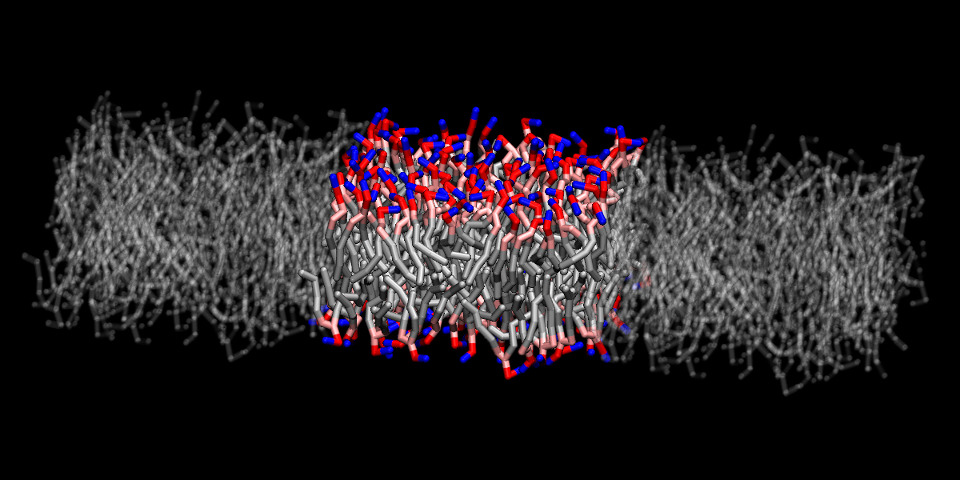
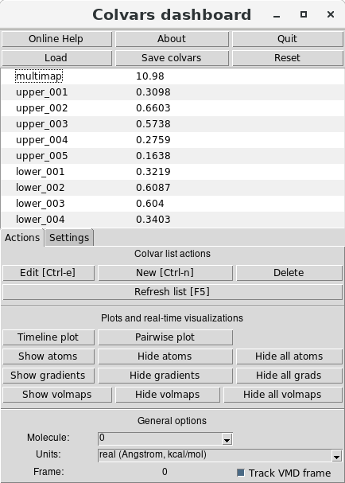
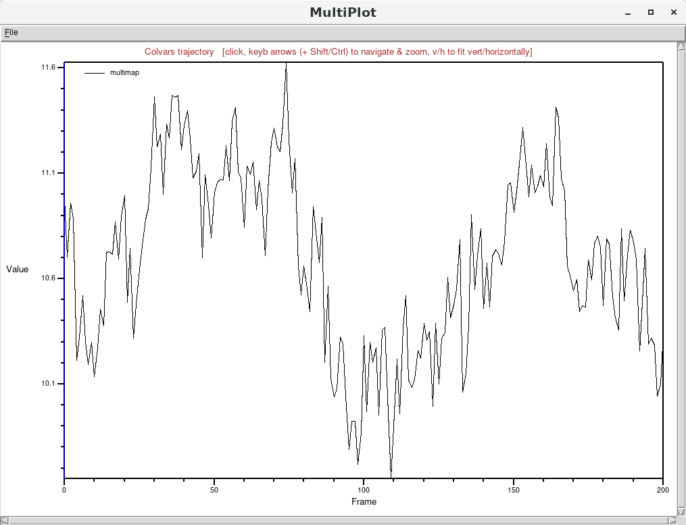
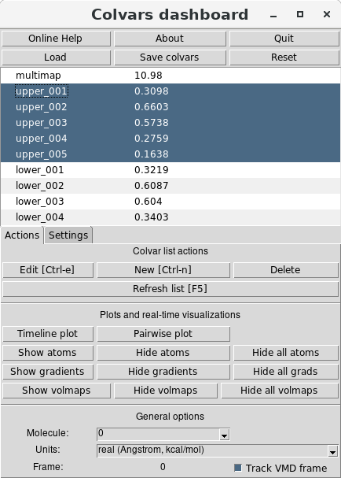
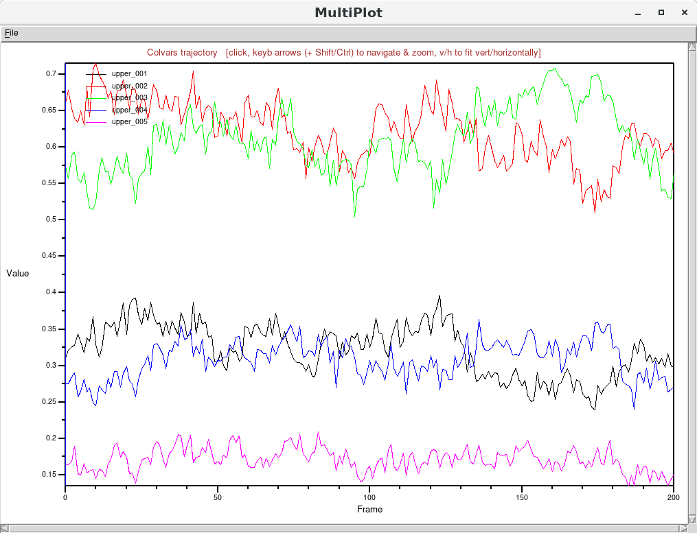
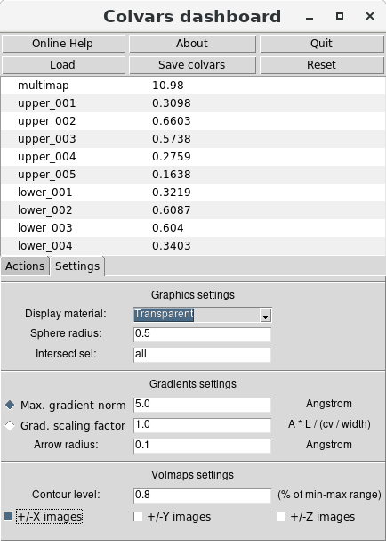
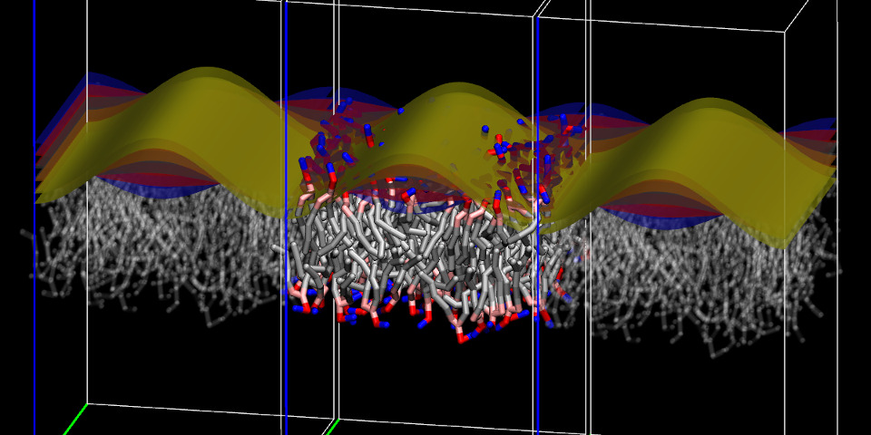
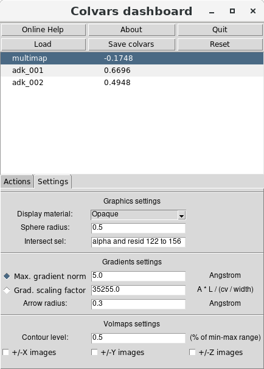
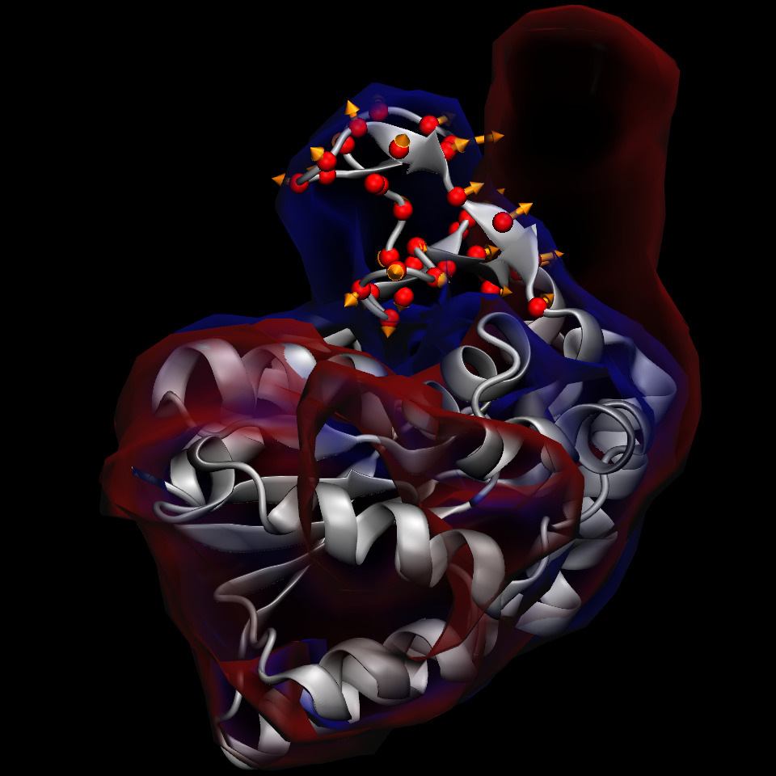

Multi-Map variables are a flexible method to accelerate changes in macromolecular shape during MD simulations (1). The method, originally developed to describe lipid membranes and water clusters (1), has also been successfully applied to protein conformational transitions as well (2).
This article describes in detail how to prepare and analyze simulations using Multi-Map variables. The following resources are used:
Given the atomic coordinates, , and a small set of 3D volumetric maps, , the Multi-Map variable is defined as:
| (1) |
where the first sum is done over all volumetric maps, and the second sum over the atoms that fit in that map. The coefficients are chosen before the simulation, one for each map: a typical choice is, for example, . The Multi-Map variable is thus a linear superposition of multiple terms, each quantifying the similarity between the corresponding map and the atomic coordinates . It is also technically possible to use non-linear functions instead of fixed coefficients , but this has not been investigated yet.
To define the Multi-Map variable, the relevant atoms must be selected. For portability reasons it is not advisable to use atom selection keywords available in VMD, or in the Colvars module. This is due to the fact that the Multi-Map implementation in NAMD leverages the GridForces feature of NAMD (8) to perform input/output operations from OpenDX files and interpolate over the points of the corresponding grid. Consistently with many other native features of NAMD, atoms for GridForces are selected through the numeric values in selected columns of PDB files.
In the first example (lipid bilayer with 100 POPC molecules per leaflet) two PDB files are needed to select the phosphate groups of each leaflet:
mol new popc_100.psf type psf waitfor all
mol addfile popc_100.pdb type pdb waitfor all
set all [atomselect top "all"]
$all set occupancy 0.0
$all set beta 0.0
set upper [atomselect top "name PO4 and z > 0.0"]
$upper set occupancy 1.0
$upper set beta 1.0
animate write pdb popc_100.phosphates-upper.pdb
$all set occupancy 0.0
$all set beta 0.0
set lower [atomselect top "name PO4 and z < 0.0"]
$lower set occupancy 1.0
$lower set beta 1.0
animate write pdb popc_100.phosphates-lower.pdb
The density maps of fluid-phase lipid bilayers contain a lot of structure, but generally not along the bilayer plane: therefore, the starting point for a bilayer is not a 3D map but a 1D profile. Undulations, contractions, and swellings are typically averaged out (i.e. not included) in 1D density profiles of bilayers, whose resolution is determined by the fluctuations of single lipid molecules and of the atoms therein. Density profiles for small bilayers (i.e. where spontaneous bending is very small) may be computed in a variety of ways. Below is an example using the MDAnalysis library.
Python code to compute the 1D number density profile.
import numpy as np
import matplotlib.pyplot as plt
import MDAnalysis
uni = MDAnalysis.Universe('popc_100.psf', 'popc_100.eq.coor.dcd')
# Select phosphate groups
sel = uni.select_atoms('name PO4')
z_profile = np.arange(-40.0, 40.0, 0.4) + 0.2
n_profile = np.zeros(shape=z_profile.shape)
n_frames = 0
for ts in uni.trajectory:
xyz, box = sel.positions, ts.dimensions[0:3]
# Wrap and center the Z coordinates
xyz[:,2] -= np.rint(np.divide(xyz[:,2], box[2])) * box[2]
xyz[:,2] -= xyz[:,2].mean()
n_z, _ = np.histogram(xyz[:,2], range=(-40.0, 40.0),
bins=z_profile.shape[0], density=True)
n_profile[:] += n_z[:]
n_frames += 1
n_profile /= np.float(n_frames)
plt.plot(z_profile, n_profile, '-')
plt.show()
The output of this script on the example trajectory (POPC bilayer) shows a distribution with two peaks, which can be well approximated by two Gaussian functions with centers at Å and standard deviations of 2 Å each.
From 1D profiles to 3D maps. Having obtained a 1D density profile for the group of interest (i.e. the phosphate groups), 3D density maps of flat bilayers are generated quite easily just by replicating the 1D density profile many times along a grid of values, as wide as the bilayer being simulated. For a map of a bilayer with an undulatory deformation, the location of the 1D profile along the axis can be shifted by a 2D function . Due to periodic boundary conditions, the simplest starting point for is a sinusoidal function:
| (2) |
where is the period of the simulation cell along the axis at equilibrium, and is the amplitude of the deformation in units of length; for a flat bilayer, .
Generating a 3D map given the 1D density profile and a deformation 2D map is conceptually not complicated at all, yet it can be a bit tedious due to technical details. The script gen_multimap.py automates the process considerably and allows using either functions or tabulated maps to define . The example below uses different options of the script to implement the following procedure:
Putting it all together, the following command generates the necessary input files (minus the PDB files):
Generate a set of 3D sinusoidal maps for a bilayer.
python3 gen_multimap.py \
--input-labels upper lower \
--input-pdb-files popc_100.phosphates-{upper,lower}.pdb \
\
--input-centers 21.0 -21.0 --input-sigmas 2.0 2.0 \
--normalize-maps \
--xsc-file popc_100.eq.xst \
\
--deformation-function map_bend_cosine \
--grid-npoints 50 50 100 \
--deformation-amplitudes -6.0 -2.0 2.0 6.0 10.0 \
--output-prefix cosine \
--vmd-script cosine.vmd --namd-script cosine.namd
When running the “gen_multimap.py" script, for each of the two selections the matrix of cross-correlation coefficients is printed on the standard output:
which shows that adjacent maps are inded very similar to each other (64.6% cross-correlation) at the chosen resolution of 2 Å, but also that the mutual cross-correlation gradually decays for maps with increasingly different deformations. The combination of these two features is essential for properly sampling a continuous pathway of molecular configurations across the different bilayer shapes.
The ability of a Multi-Map variable to properly account for movement between shapes requires that the selected atoms or molecules only move in regions where the density of at least one map is not zero. Therefore, in the auto-generated script “cosine.namd" a restraint on the Z coordinate of the bilayer is also included, based on a distanceZ-type variable named “com_dist".
This example makes use input files prepred in the first section of the MDFF tutorial, specifically the “closed" and “open" structures of the adenylate kinase protein (ADK). To enable a Multi-Map simulation for the same protein, two density maps one for each state, may be prepared:
Generate a map for each protein structure.
mol new 1ake-initial-docked_autopsf.psf
mol addfile 1ake-initial-docked_autopsf.pdb type pdb waitfor all
mdff sim [atomselect top all] -o 1ake.density.dx
mol new 1ake-initial-docked_autopsf.psf
mol addfile 4ake-target_autopsf.pdb type pdb waitfor all
mdff sim [atomselect top all] -o 4ake.density.dx
where the default resolution of the mdff sim command is used, which is fairly coarse (10 Å) to improve the ability to simulate a smooth transition pathway. The mutual cross-correlation between the two maps may be computed directly in VMD:
voltool correlate -i1 1ake.density.dx -i2 4ake.density.dx
...
0.7627721242997564
The above is a relatively high cross-correlation, especially considering that these are the only two maps considered. An undesirable consequence of this fact is that fluctuations in the region shared by the two densities and may affect the ability of the Multi-Map variable to discriminate between “true" transitions between the two states. Possible remedies may be using non-overlapping densities by considering only certain domains of the protein (which may be difficult for experimental density maps), or choosing Multi-Map coefficients and of opposite signs, so that fluctuations in the shared region effectively cancel each other out. The latter is the strategy adopted in ref. (2), where conformational changes of several proteins are investigated using Multi-Map variables with coefficients .
Using this choice of coefficients, it is possible to reuse the gen_multimap.py script to generate input scripts for VMD and NAMD:
Generate Multi-Map configuration syntax for two protein density maps.
python3 gen_multimap.py \
--input-label adk \
--input-pdb-file 1ake-initial-docked_autopsf-grid.pdb \
--input-map-files 1ake.density.dx 4ake.density.dx \
--normalize-map \
--multimap-coefficients -1 1 \
--output-prefix adk-multimap \
--vmd-script adk-multimap.vmd --namd-script adk-multimap.namd
where the option “--multimap-coefficients" overrides the default choice of .
As in the bilayer example, a center-of-mass restraint is included in the auto-generated script “adk-multimap.namd". Because input 3D map files were provided, the gen_multimap.py script assumed that the object under consideration (a protein in this case) can move freely in all three dimensions. Therefore, a restraint based on an isotropic distance-type variable is included; the position of the center of mass is by default the origin , but it may be redefined via the Tcl variable “com_pos".
Also included is a restraint on an orientation-type variable, called “ori". This restraint is centered around an orientation that correspond to the atoms being aligned with the reference structure, avoiding loss of alignment with all maps simultaneously. Because this variable specifically cannot be computed in parallel in NAMD, it is generally recommended to use a much smaller selection of atoms than those used for the Multi-Map variable (e.g. only the C atoms instead of a whole protein).
This section explains the syntax of the VMD and NAMD scripts generated by gen_multimap.py. The
basic building block of a Multi-Map variable is the “mapTotal" function:
https://colvars.github.io/colvars-refman-namd/colvars-refman-namd.html#sec:cvc
As its name implies, this function computes the total value of a map,
, and
allows it to be treated as a collective variable. The simple example included in the link above defines
the number of water molecules in a cavity, based on a single map that describes the shape of
the cavity itself. A Multi-Map variable is nothing but a combination of multiple instances of
mapTotal.
Because VMD and NAMD have different ways of dealing with volumetric maps, how the mapTotal variables are defined in Colvars should be adjusted.
In VMD, volumetric maps are loaded just like atomic coordinate files, from the graphical menu or from the command line.
Loading volumetric maps (VMD version).
mol addfile map_001.dx type dx waitfor all
mol addfile map_002.dx type dx waitfor all
Once these are loaded, the Colvars module can refer to these maps by numeric index (starting at 0), consistently with their use in the rest of VMD, e.g. by the voltool command. An example Colvars configuration suitable for use in VMD is the following.
Turning volumetric maps into collective variables (VMD version).
colvar {
name xi
mapTotal {
name map_001
componentCoeff 1.0
mapID 0
atoms {
atomsFile atoms.pdb
atomsCol O
}
}
mapTotal {
name map_002
componentCoeff 2.0
mapID 1
atoms {
atomsFile atoms.pdb
atomsCol O
}
}
}
In here, a collective variable named xi is built from two mapTotal functions named map_001 and map_002. The maps loaded in VMD's memory are accessed by Colvars using the values of mapID and the atoms assigned to each map are chosen based on non-zero values of the occupancy column in the file atoms.pdb. The coefficients in eq. 1 are defined by the componentCoeff keywords. When the variable is computed, the values of each map at the coordinates of the atoms are computed: this is carried out using linear interpolation between the grid points, as is done by the interpvol selection property. If a periodic cell is defined, the atomic coordinates are wrapped inside it internally to Colvars (so that they all fit inside the map's domain) and the resulting values of are summed up inside the Colvars module.
Turning our attention to NAMD, things change slightly because (i) NAMD uses a different syntax to load volumetric maps, and (ii) a larger chunk of the computation is carried out by NAMD directly instead of using Colvars code. This is done to maximize parallel efficiency: NAMD computes the sum over atoms in parallel, while Colvars carries out the much simpler sum over the maps, . (This capability was introduced into NAMD starting from version 2.14 as part of the implementation of the mapTotal function (1); previous versions could compute the (8), but did not add them up.)
The GridForces commands in NAMD are used to load each map, assigning an unique label to each one. The same labels are then used inside Colvars to reference the maps.
Loading volumetric maps (NAMD version).
mGridForcePotFile map_001 map_001.dx
mGridForceFile map_001 atoms.pdb
mGridForceCol map_001 O
mGridForceChargeCol map_001 B
# Disable this grid's scale factors; the Colvars module will compute the force
mGridForceScale map_001 0.0 0.0 0.0
# Continuously interpolate between periodic images of the map
mGridForceCont1 map_001 yes
mGridForceCont2 map_001 yes
mGridForceCont3 map_001 yes
# Do not raise an error if the grid extends beyond the simulation cell
mGridForceCheckSize map_001 off
mGridForcePotFile map_002 map_002.dx
mGridForceFile map_002 atoms.pdb
mGridForceCol map_002 O
mGridForceChargeCol map_002 B
mGridForceScale map_002 0.0 0.0 0.0
mGridForceCont1 map_002 yes
mGridForceCont2 map_002 yes
mGridForceCont3 map_002 yes
mGridForceCheckSize map_002 off
As implied by the keywords above, the selection of atoms is carried out using NAMD keywords. GridForces' syntax requires both a “magnitude" flag via mGridForceCol and a “charge" flag via mGridForceChargeCol. When a homogeneous set of particles is used, it is convenient to just use 1 for both fields in the PDB files.
The keyword mGridForceScale is very important: if given non-zero values, a traditional GridForces simulation is carried out (8): it is necessary to assign zero to disable GridForces and enable instead a Multi-Map simulation (1). The flags mGridForceContX and mGridForceCheckSize are specific to an intrinsically periodic system like a lipid bilayer. When a constant-pressure simulation is carried out and the simulation cell expands beyond the boundaries of the maps, rather having atoms “fall off the map" it is much more robust to continuously interpolate between periodic images of the maps themselves, as the GridForces syntax allows.
Do fluctuations in the simulation cell size affect simulation results? Unfortunately yes: for historical consistency with the original GridForces method (8), volumetric maps are defined in absolute coordinates, and the sizes of their unit cells are not guaranteed to match the sizes of the simulation cell.
The safest approach to avoid inaccuracies or discontinuities is using 2D deformation functions whose slope is small or zero at the edges of the simulation cell. For sinusoids, using is a much better choice than . If, for example, the simulation cell contracted by 1% compared to its equlibrium width , this fluctuation would cause the following changes at the cell's edges:
Therefore, there is a much smaller discontinuity when using a deformation function that is flat at the cell's edges (i.e. ) than one with a finite slope (i.e. ).
For 2D deformation functions that are not periodic to begin with, the simplest choice is generally to make them periodic by gradually switching them to zero near the cell's edges, i.e. assuming on average a flat bilayer shape as a boundary condition. Based on what shown above, this choice is not only the simplest but also the most robust one.
Having defined both the maps and the atom selections through NAMD flags, the Colvars configuration is much simplified:
Turning volumetric maps into collective variables (NAMD version).
colvar {
name xi
mapTotal {
name map_001
componentCoeff 1.0
mapName map_001
}
mapTotal {
name map_002
componentCoeff 2.0
mapName map_002
}
}
When the variable xi is computed, Colvars will simply retrieve the pre-computed value of each mapTotal function from NAMD. It should be noted that the values of are computed by default with a cubic interpolation between the neighboring grid points. Therefore, Multi-Map variables computed by VMD and NAMD over the same atomic configuration will be very similar, but not identical.
The implementations of the Multi-Map variable in VMD and NAMD differ in several ways:
The Colvars Dashboard is a graphical user interface for the Colvars module, implemented as a VMD plugin. It is used here to visualize how various atomic properties (in this case, atomic coordinates and volumetric maps) are used to compute a collective variable. The features exemplified here are shown using either the bilayer or the protein example, but may be used with either system interchangeably.
The molecular structure of the biilayer and an equilibrium MD trajectory may be loaded from the VMD GUI following the usual steps, or using the commands below.
mol new popc_100.psf type psf
mol addfile popc_100.eq.coor.dcd type dcd waitfor all
The bilayer was pre-equilibrated at a temperature of 300 K and a pressure of 1 atm semi-isotropically applied to the lateral and transverse directions. Shown in the snapshot below are the bilayer and its two nearest periodic images along the X axis (shown in “Ghost" material):

Next, the Multi-Map collective variable needs to be defined, such that the Colvars module can compute it by accessing directly the atomic coordinates and volumetric maps from VMD's memory. For a single-map variable, this definition may be done from scratch inside the Dashboard GUI. However, it is good to remember that we plan on using multiple maps, and there are significant technical differences between VMD and NAMD. Manual definition from scratch for this variable is definitely possible, but a bit tedious. To automatically define the variable, one can run the VMD script generated by the gen_multimap.py tool:
source cosine.vmd
which automates the tasks of (i) loading the maps, (ii) defining the Multi-Map collective variable, and (iii) defining single-map variables useful to monitor the relative contribution of each map. The latter ones are particularly useful for plotting and visualization.
The Dashboard window (shown right below) can be accessed under the “Extensions/Analysis"
menu:

In the central region of the window, the values of the collective variables currently defined are shown.
These are the Multi-Map collective variable, named “multimap", and the single-map variables, named
“upper_001" through “upper_005" for the upper-leaflet maps (and similarly for the lower leaflet. By
default, the values correspond to the atomic configuration currently shown in the VMD Display
window (see the “Track VMD frame" checkbox). Optionally, the values of “multimap" over the
entire trajectory loaded in memory can be plotted. First, the variable “multimap" may be
selected from the list by simply clicking on it, and then clicking on the “Timeline plot"
button:
 which shows the variable to be in equilibrium around an approximate value of 11 (dimensionless
units).
The contributions of the individual maps to the Multi-Map variable can also be shown over time.
Multiple variables can be selected in the Dashboard by holding the “Shift" key while clicking on their
names:

and then using again the “Timeline plot" button. For the single-map variables named “upper_001"
through “upper_005", this plot shows five stable trajectories distinct different equilibrium
values:
 This correlates well with how the individual maps were generated: the two largest contributions are from
“upper_002" and “upper_003", which model a nearly-flat leaflet with cosine-shaped deformations peaking at
and
Å,
respectively. Next in order of relative importance are the two maps “upper_001"
and “upper_004" correspond to stronger cosine-shaped deformations peaking at
and
Å.
Lastly, the map “upper_005" describes the shape of a strongly bent bilayer (a cosine of
Å in
amplitude) and its contribution is the lowest.
You have certainly noticed that the above plots are not optimal for being used as article figures or presentation slides: consider using the “File" menu of the “Multiplot" window to export the time series of the variables for further analysis. The most useful application of the Multiplot window is interactive visualization: for more information, see the visualization section of the Dashboard documentation.
The Colvars Dashboard can automate the creation of graphical representations of the atoms and the
volumetric maps. First, one can use the the “Settings" tab of the Dashboard's main window to
customize the representation parameters of the maps. For example, new maps may be shown with a
“Transparent" material, a contour level equal to 80% of the range between the minimum and
maximum values of the map, and enabling the display of two adjacent periodic images along the X
axis):

To choose which maps to display, either the Multi-Map variable or a group of individual maps may be selected, as done earlier to display their values in the Multiplot window. For example, the five maps “upper_001" through “upper_005" are selected and displayed using on the “Show volmaps" button from the “Actions" tab:

which shows the five selected maps as contour surfaces, each with a distinct color (chosen automatically) and a box representing their boundaries. Due to how the volumetric map's box is drawn in VMD, a gap appears between this box and its periodic images: the width of this gap is exactly one grid spacing (half on either side). During a simulation, for any coordinates in this region the value of map would be computed by interpolation between its values at the two adjacent boundaries.
To illustrate the ability of the Colvars Dashboard to visualize atomic properties associated with collective variables (i.e., atom positions and gradients), we return to the ADK protein example:
Load ADK input files and Multi-Map definition into VMD.
mol new 1ake-initial-docked_autopsf.psf
mol addfile 1ake-initial-docked_autopsf.pdb type pdb waitfor all
mol addfile 4ake-target_autopsf.pdb type pdb waitfor all
source adk-multimap.vmd
Firstly, the volumetric maps can be shown as described in the previous section. Secondly,
from the “Settings" tab of the Dashboard's main window it is useful to select which atoms
to display alongside them. The list of atoms associated to each colvar is automatically
retrieved by the Dashboard window from the Colvars module's memory, and does not need
to be specified manually. However, because Multi-Map variables are typically defined over
many atoms, the simultaneous representation of their positions and gradients may be rather
crowded. It is preferable to define a relatively small selection of relevant atoms, e.g. the
C atoms
of the “lid" domain (approximately residues 122 to 156) :

Upon returning to the “Actions" tab, the “Show atoms" and “Show gradients" buttons can be used to visualize the contribution of these atoms to the dynamics of the Multi-Map variable:

The above figure shows that for the atoms in the “lid" domain, there are two alternative pathways to increase the value of the Multi-Map variable : (i) atoms moving toward regions where both and are zero (i.e. away from any density contour), and (ii) atoms moving toward the region where is non-zero (i.e. toward the density lobe shown in red, near the upper right corner). The former represents any movements away from both the initial and target shapes, and the latter a conformational change toward the target shape.
Thanks to being located in a region where and overlap but are not identical, gradients of atoms between the initial and target shapes appear larger than the others, and are likely to produce physically relevant transitions when a force is applied on the Multi-Map variable. Nonetheless, it is good to keep in mind that any force applied will also have some components leading away from either shape. The use of restraints can greatly alleviate but never resolve this issue completely. Careful examination of the simulated trajectory is an essential requirement for PMF computations along this type of variable.
[1] Giacomo Fiorin, Fabrizio Marinelli, and José D. Faraldo-Gómez. Direct derivation of free energies of membrane deformation and other solvent density variations from enhanced sampling molecular dynamics. J. Comp. Chem., 41(5):449--459, 2020. doi: 10.1002/jcc.26075. URL https://onlinelibrary.wiley.com/doi/abs/10.1002/jcc.26075.
[2] John W. Vant, Daipayan Sarkar, Giacomo Fiorin, Robert Skeel, Josh V. Vermaas, and Abhishek Singharoy. Data-guided multi-map variables for ensemble refinement of molecular movies. bioRxiv, 2020. doi: 10.1101/2020.07.23.217794. URL https://www.biorxiv.org/content/early/2020/07/24/2020.07.23.217794.
[3] William Humphrey, Andrew Dalke, and Klaus Schulten. VMD: visual molecular dynamics. Journal of Molecular Graphics, 14(1):33--38, 1996. doi: 10.1016/0263-7855(96) 00018-5. URL https://doi.org/10.1016/0263-7855(96)00018-5.
[4] Giacomo Fiorin, Michael L. Klein, and Jérôme Hénin. Using collective variables to drive molecular dynamics simulations. Mol. Phys., 111(22-23):3345--3362, 2013. doi: 10. 1080/00268976.2013.813594. URL https://doi.org/10.1080/00268976.2013.813594.
[5] James C. Phillips, David J. Hardy, Julio D. C. Maia, John E. Stone, João V. Ribeiro, Rafael C. Bernardi, Ronak Buch, Giacomo Fiorin, Jérôme Hénin, Wei Jiang, Ryan McGreevy, Marcelo C. R. Melo, Brian K. Radak, Robert D. Skeel, Abhishek Singharoy, Yi Wang, Benoît Roux, Aleksei Aksimentiev, Zaida Luthey-Schulten, Laxmikant V. Kalé, Klaus Schulten, Christophe Chipot, and Emad Tajkhorshid. Scalable molecular dynamics on CPU and GPU architectures with NAMD. Journal of Chemical Physics, 153(4):044130, 2020. doi: 10.1063/5.0014475. URL https://doi.org/10.1063/5.0014475.
[6] Naveen Michaud-Agrawal, Elizabeth J. Denning, Thomas B. Woolf, and Oliver Beckstein. MDAnalysis: A toolkit for the analysis of molecular dynamics simulations. Journal of Computational Chemistry, 32(10):2319--2327, 2011. doi: 10.1002/jcc.21787. URL https://onlinelibrary.wiley.com/doi/abs/10.1002/jcc.21787.
[7] Richard J. Gowers, Max Linke, Jonathan Barnoud, Tyler J. E. Reddy, Manuel N. Melo, Sean L. Seyler, Jan Domański, David L. Dotson, Sébastien Buchoux, Ian M. Kenney, and Oliver Beckstein. MDAnalysis: A Python Package for the Rapid Analysis of Molecular Dynamics Simulations. In Sebastian Benthall and Scott Rostrup, editors, Proceedings of the 15th Python in Science Conference, pages 98 -- 105, 2016. doi: 10.25080/ Majora-629e541a-00e. URL https://doi.org/10.25080/Majora-629e541a-00e.
[8] David B. Wells, Volha Abramkina, and Aleksei Aksimentiev. Exploring transmembrane transport through -hemolysin with grid-steered molecular dynamics. J. Chem. Phys., 127(12): 125101, sep 2007. ISSN 0021-9606. doi: 10.1063/1.2770738. URL http://aip.scitation.org/doi/10.1063/1.2770738.
For questions or comments about: